Git, at the speed of thought.
Git Raccoon is a native Git client written in Rust. It opens a million-commit repository in about three seconds, and never makes you wait for a frame. See your whole history as a graph; commit, branch, merge, rebase, sync and handle pull requests with buttons, menus and drag and drop. Free, open source, and careful with your work.
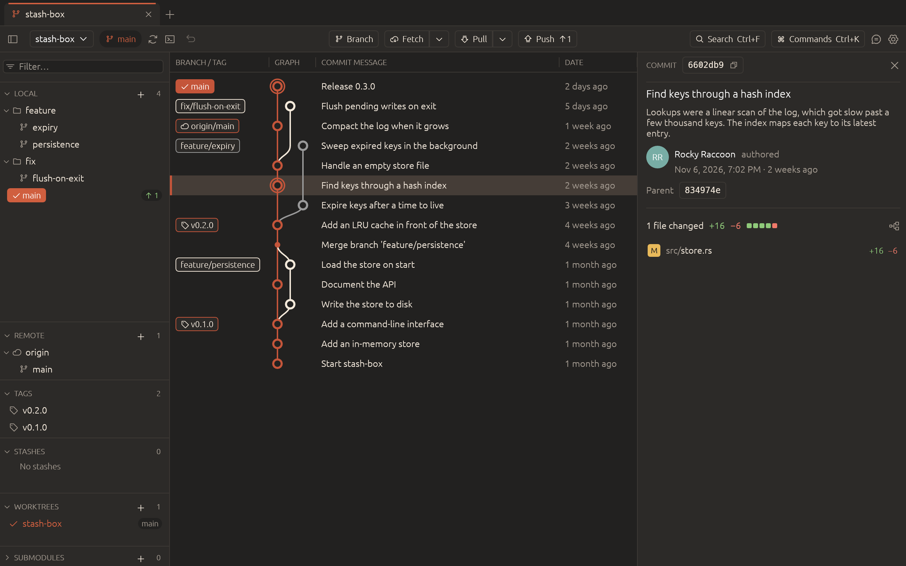
Built in Rust. Blazing fast.
No browser in disguise: Git Raccoon is a native app, drawn on your graphics card, with Git's work kept off the window so it never freezes. The numbers are from a repository with a million commits, on an ordinary four-core machine.
Everything Git does, where you can see it
Git Raccoon runs your own git for anything that changes a repository, so your hooks, signing, SSH keys and credential helpers work exactly as they do on the command line.
Your history, as a graph
Every commit, newest at the top, with lines for branches and merges and labels for branches, tags and remotes.
- Smooth on repositories with a million commits
- Search by message, author, SHA or file
- A sidebar you arrange: resize, collapse or hide its sections
- Columns you can reorder and resize, and curved or rounded lines

Review and merge, right here
On GitHub, GitLab.com or your own GitLab, open a pull or merge request in place of the graph: its conversation in formatted Markdown, its commits, and its changes with every thread under its line.
- Comment on a line or a range; your comments wait as drafts and go together when you finish the review
- Approve, then merge, squash or rebase, or see why it can't be merged yet
- Open a new one from any branch, filled in from its commits, and push in the same click

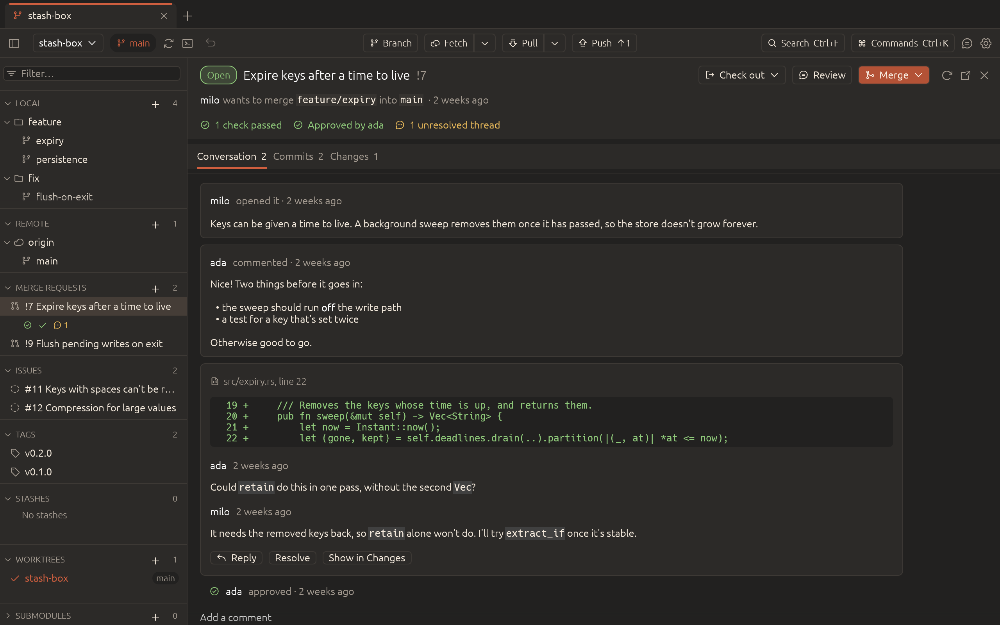
Diffs you can actually read
Unified or side by side, with syntax highlighting for hundreds of languages and the changed words marked inside each line. Just the changes, or the whole file with them in place.
- Pick lines by clicking or dragging, then copy or stage them
- Image changes shown as images
- Large and LFS files handled gracefully

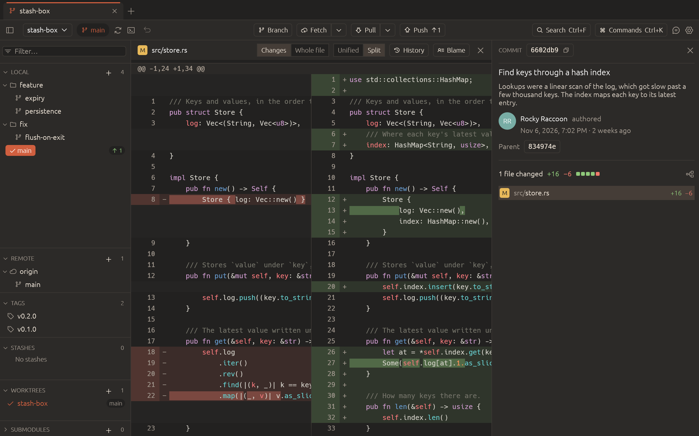
Stage exactly what you mean
Stage whole files, single hunks, or just the lines you pick. Write the message, press Ctrl+Enter, done.
- Discarded changes go to the Recycle Bin or Trash
- Amend, with a warning if it's already pushed
- Your hooks run; if one refuses, your message is kept

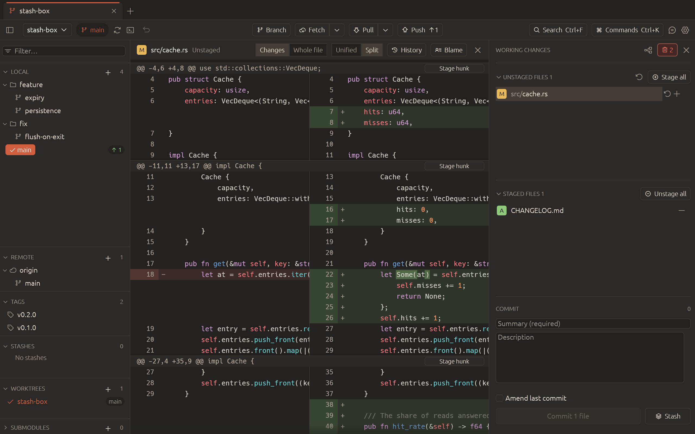
Rewrite history without fear
Plan an interactive rebase by dragging commits into order and choosing pick, reword, squash, fixup or drop for each. Merge by dragging one branch onto another.
- Undo for commits, merges, rebases, resets and more
- Cherry-pick, revert, reset and stash from any commit
- Force pushes are always with lease

Conflicts, calmly
When a merge, rebase, cherry-pick or revert stops on conflicts, they all show in one place, with each side named by its branch rather than "ours" and "theirs". Open a file as cards, one per conflict with what both sides started from, or as panes: each side's whole file next to each other and the result below, taking the whole window.
- Take a side, both in either order, or tick lines in the order you want them
- Why? shows the commits on each side that changed those lines
- A conflict you've resolved before can be resolved the same way again, for you to check

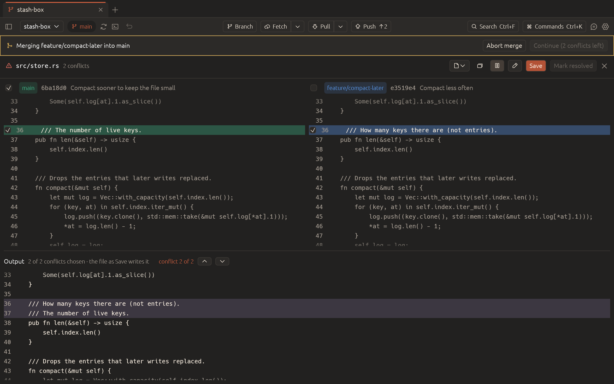
Fast from the keyboard
Press Ctrl+K and type a few letters to run any action, or to check out, merge, rebase onto or jump to any branch.
- Shortcuts for everyday work: fetch, pull, push, stash
- Your terminal, opened in the repository: Ctrl+`
- Each repository in its own tab

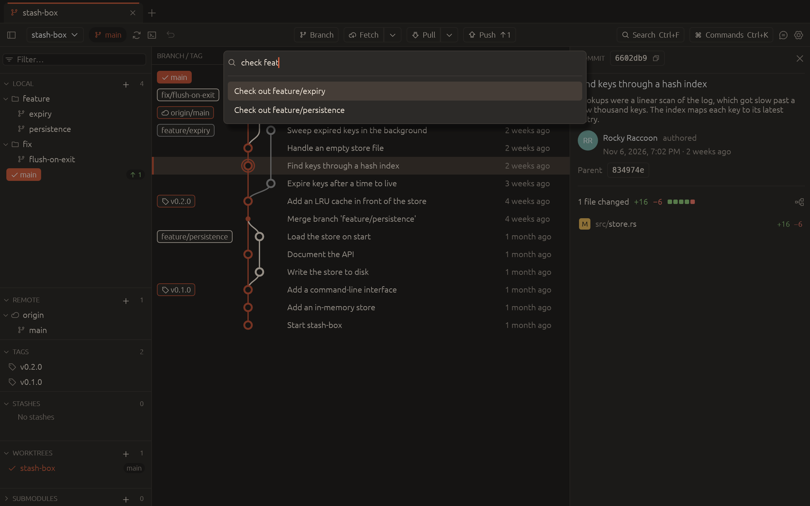
Who changed this, and why?
Turn on Blame and every line shows who last changed it, and when; turn on History and every commit that touched the file lines up beside it. Use one, both or neither: one click takes you to any of those commits.
- History that follows renames
- Commit details with authors, dates and parents
- Copy a SHA, a branch or a tag name with one click

And the details that matter
The things you notice on day thirty, not just day one.
Protects your work
Offers to stash before a checkout, asks twice before deleting unmerged commits, and tells you how to get them back.
Syncs safely
Pull fast-forwards by default and asks before merging or rebasing; progress shows with a Cancel button.
Signs in, and sets up SSH
Uses Git Credential Manager, credential helpers and your SSH agent. Sets up SSH for GitHub and GitLab in one window, and SSH errors say what's wrong, with the fix.
Submodules and worktrees
See their state, update them, open them in a tab; add a submodule from a URL, or a worktree on a new branch.
Keeps itself up to date
New versions download in the background; restart when it suits you, with your tabs and settings kept.
Knows before it conflicts
Merging, rebasing or pulling tells you beforehand which files would conflict, worked out without touching your files.
Works with AI agents, if you want
Off unless you turn it on. Claude Code, Cursor and others connect over MCP: they read freely, ask before changing anything, and can propose how to resolve a conflict for you to accept.
Private by default
No account needed, no tracking. Crash reports stay on your computer unless you choose to post one.
Make it yours
Six looks, from Raccoon's warm browns to High contrast, each in a dark and a light version, or following your system's light and dark. Or make your own. Interface size from 50% to 200%.

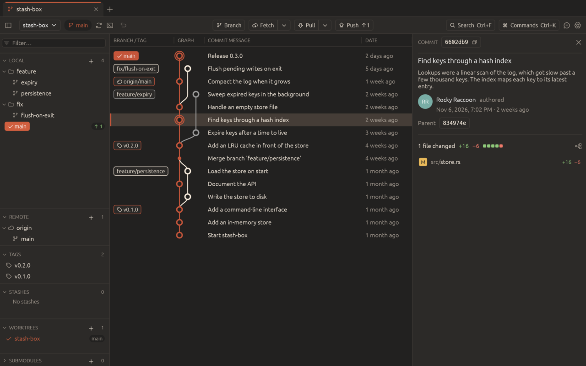

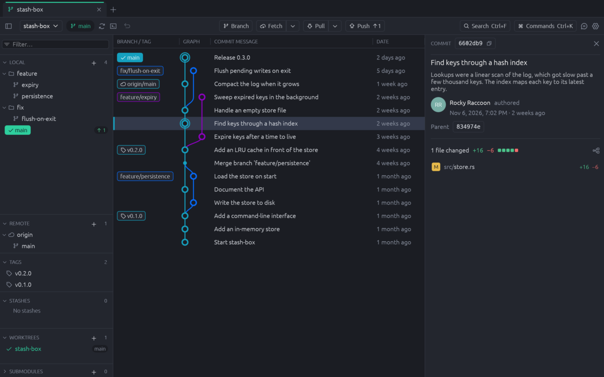

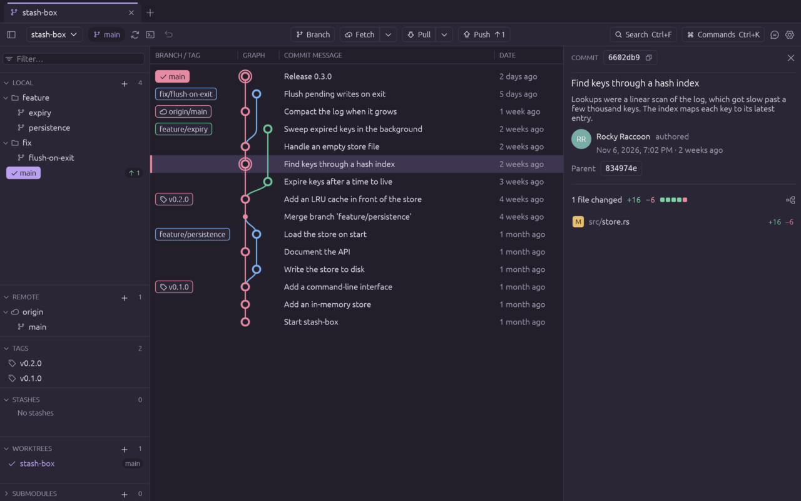

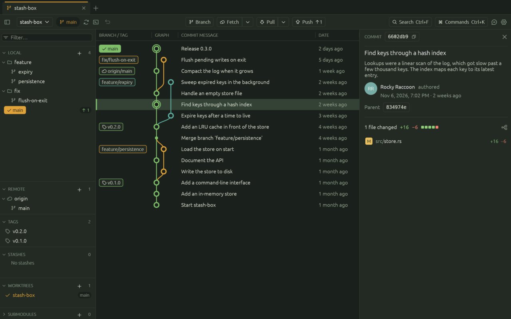

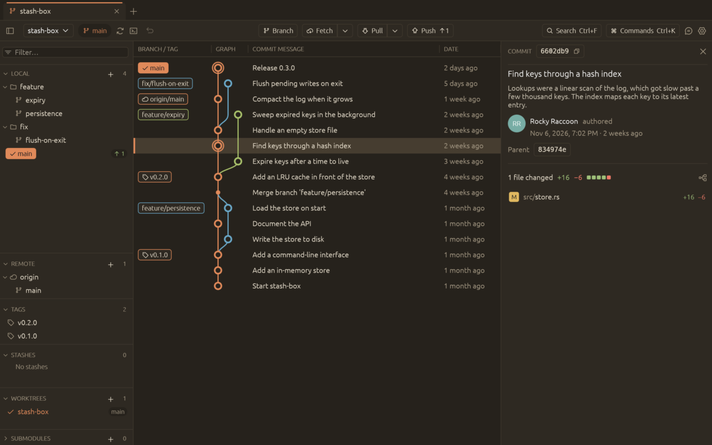

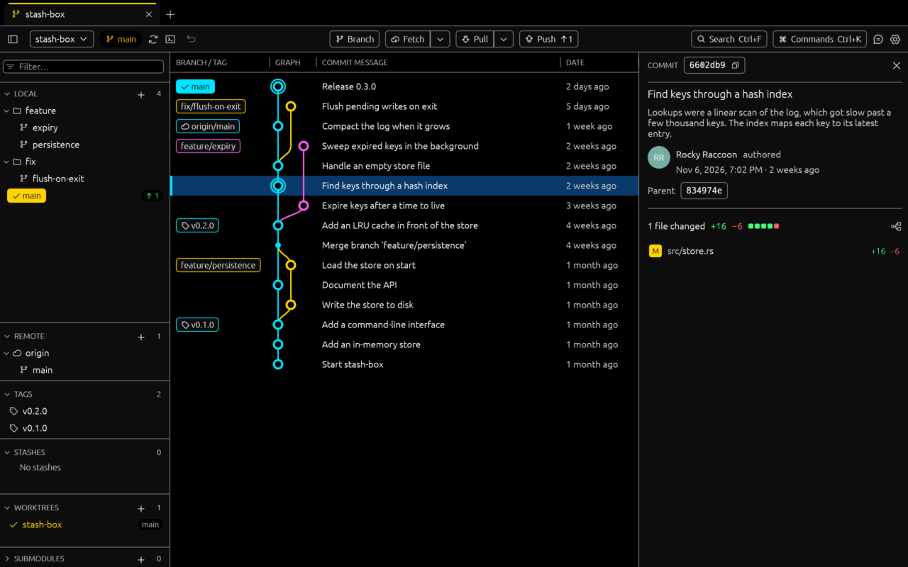
Your own theme, in minutes
Start from any look and change any colour, for its dark and its light version. The app changes as you edit, and text that would be hard to read is pointed out, with a fix in one click.
- Share themes as a file; import other people's
- Pick how the graph's lines bend, and how round

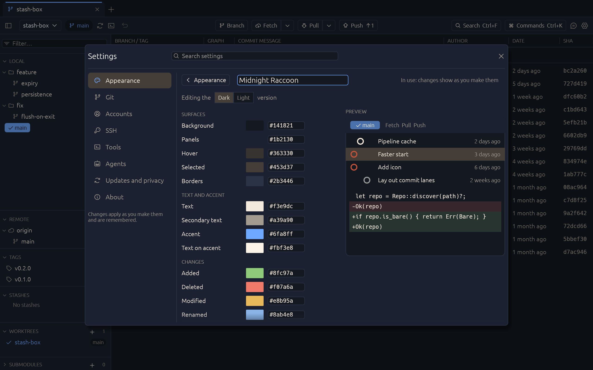
Coming next
Designed, and on its way. Follow along on the roadmap.
Profiles for work and personal
Switch who you commit as, and which GitHub or GitLab accounts push and pull, from one menu. Warned before you commit to a work repository as your personal self.
Download Git Raccoon
Free, for everyone.
Windows
Windows 10 and 11, 64-bit. The installer asks where to install, and needs no administrator rights.
Installer (.exe) Portable (.zip)Linux
64-bit, on most distributions. An AppImage: make it executable and run it; nothing to install.
AppImage All releasesGit Raccoon needs Git installed. The installers aren't code-signed: on Windows choose More info, then Run anyway; on a Mac, right-click Git Raccoon in Applications and choose Open the first time. More about installing.